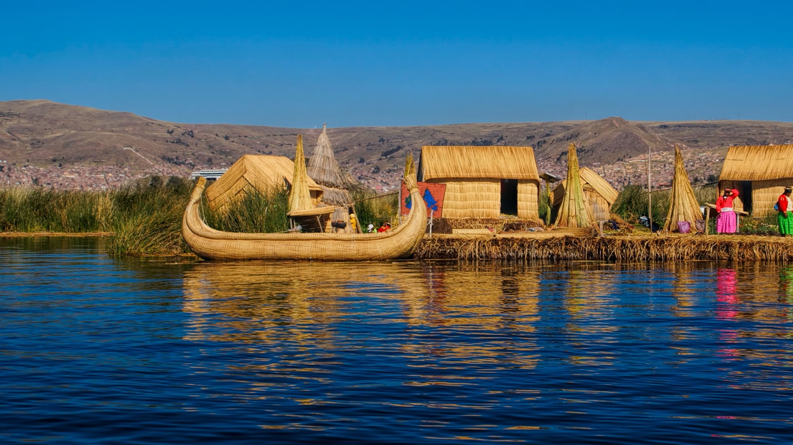
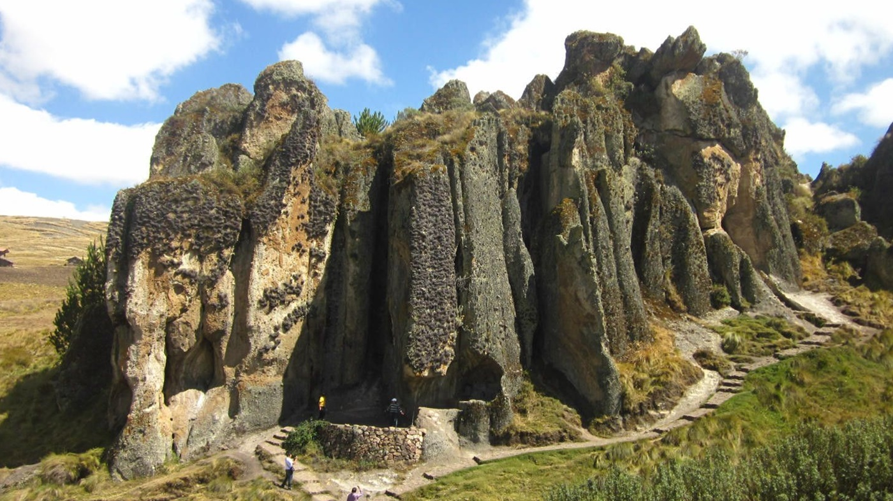
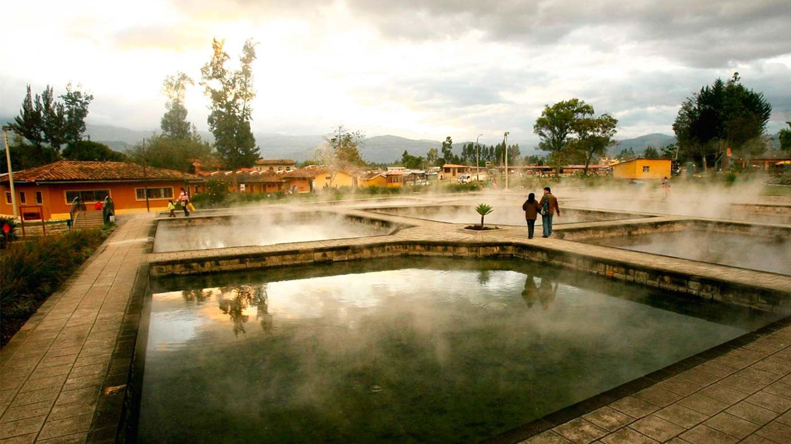

Machu Picchu es una ciudadela inca ubicada en las alturas de las montañas de los Andes en Perú,
sobre el valle del río Urubamba.

El lago Titicaca
Está formado por dos cuerpos de agua separados por el estrecho de Tiquina; el más grande situado al norte es
denominado lago Mayor o Chucuito y tiene una superficie de 6450 km², estando en esta parte su mayor profundidad
(283 m), cerca de la isla Soto.

Bosque de piedras de Cumbemayo
El sitio es especialmente conocido como yacimiento arqueológico, en el cual destacan las ruinas
de un acueducto pre-incaico que posee unos 8 km de longitud. El acueducto juntaba agua de precipitaciones
y la transportaba hacia la zona del océano Pacífico.

Baños del Inca
Es un balneario medicinal que atrae a miles de personas que buscan, en sus diversas pozas de aguas terapéuticas,
alivio para el cuerpo, la mente y el espíritu.